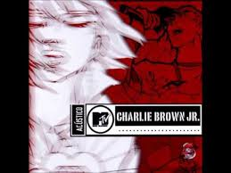
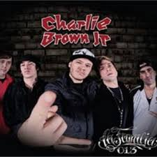

Álbuns e DVDs do CBJr
- 1997 Transpiração Contínua Prolongada
Principais faixas:"O Coro Vai Comê!", "Proibida pra Mim (Grazon)", "Quinta-Feira"

- 1999 Preço curto...Prazo longo
Principais faixas:"Zóio de Lula", "Não É Sério", "Te Levar"
- 2000 Nadando com os Tubarões
Principais faixas: "Rubão, o Dono do Mundo", "Chorão e o Poeta", "Me Encontra"
- 2001 100% Charlie Brown Jr. (Abalando a sua Fábrica)
Principais faixas: "Lugar ao Sol", "Hoje Eu Acordei Feliz"
- 2002 Bocas Ordinárias
Principais faixas:"Papo Reto (Prazer é com Você)", "Só Por Uma Noite", "Baader-Meinhof Blues"
- 2003 Acustico MTV
Principais faixas: "Só os Loucos Sabem", "Lugar ao Sol", "Vícios e Virtudes", "O Coro Vai Comê!", "Proibida pra Mim (Grazon)", "Te Levar"
- 2004 Tâmo Aí na Atividade
Principais faixas: "Champanhe e Água Benta", "Tamo Aí na Atividade"

- 2005 - Imunidade Musical
Principais faixas: "Lutar Pelo Que É Meu", "Ela Vai Voltar (Todos os Defeitos de Uma Mulher Perfeita)", "Senhor do Tempo"
- 2007 - Ritmo, Ritual e Responsa
Principais faixas: "Pontes Indestrutíveis", "Não Viva em Vão", "Uma Criança Com Seu Olhar"
- 2009 - Camisa 10 (Joga Bola até na Chuva)l
Principais faixas: "Só os Loucos Sabem", "Me Encontra".
Álbum que trouxe um dos maiores clássicos da banda e foi vencedor do Grammy Latino.

- 2012 - Musica Popular Caiçara(Ao Vivo)
Principais faixas: "Céu Azul", "Só os Loucos Sabem", "Pontes Indestrutíveis", "Me Encontra", "Dias de Luta, Dias de Glória", "Ela Vai Voltar (Todos os Defeitos de Uma Mulher Perfeita)", "Lugar ao Sol", "Rubão, o Dono do Mundo", "Tudo Que Ela Gosta de Escutar", "Não É Sério", "Proibida pra Mim (Grazon)".
- 2013 - La Familia 013
Principais faixas: "Meu Novo Mundo", "Um Dia A Gente Se Encontra".
Lançado postumamente, este álbum é um emocionante adeus do Chorão aos fãs.
- 2013 - La Familia 013
- 2012 - Musica Popular Caiçara(Ao Vivo)
- 2009 - Camisa 10 (Joga Bola até na Chuva)l
- 2007 - Ritmo, Ritual e Responsa
- 2005 - Imunidade Musical
- 2004 Tâmo Aí na Atividade
- 2003 Acustico MTV
- 2002 Bocas Ordinárias
- 2001 100% Charlie Brown Jr. (Abalando a sua Fábrica)
- 2000 Nadando com os Tubarões
- 1999 Preço curto...Prazo longo